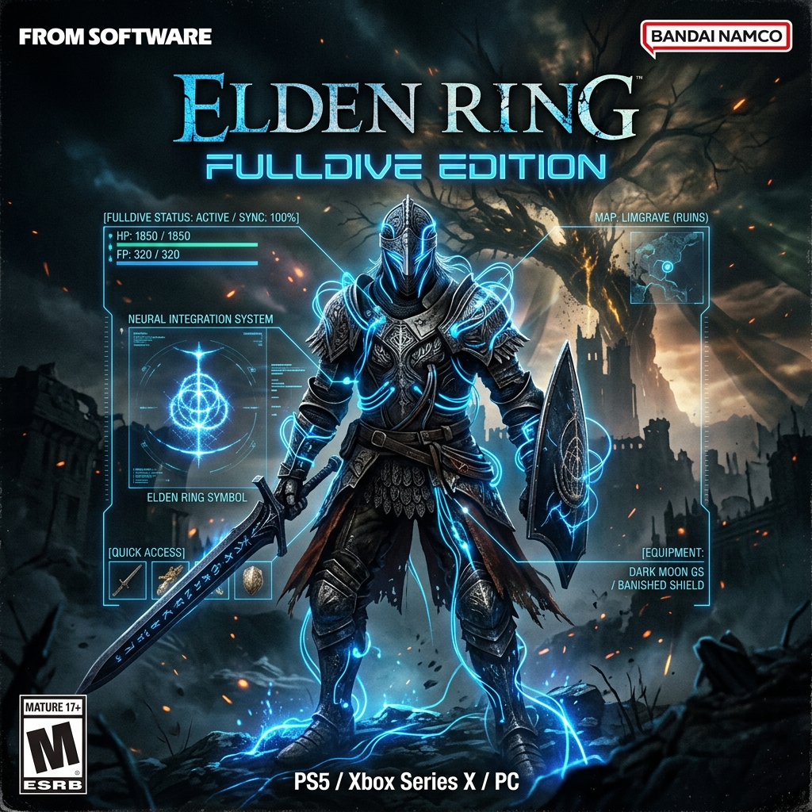
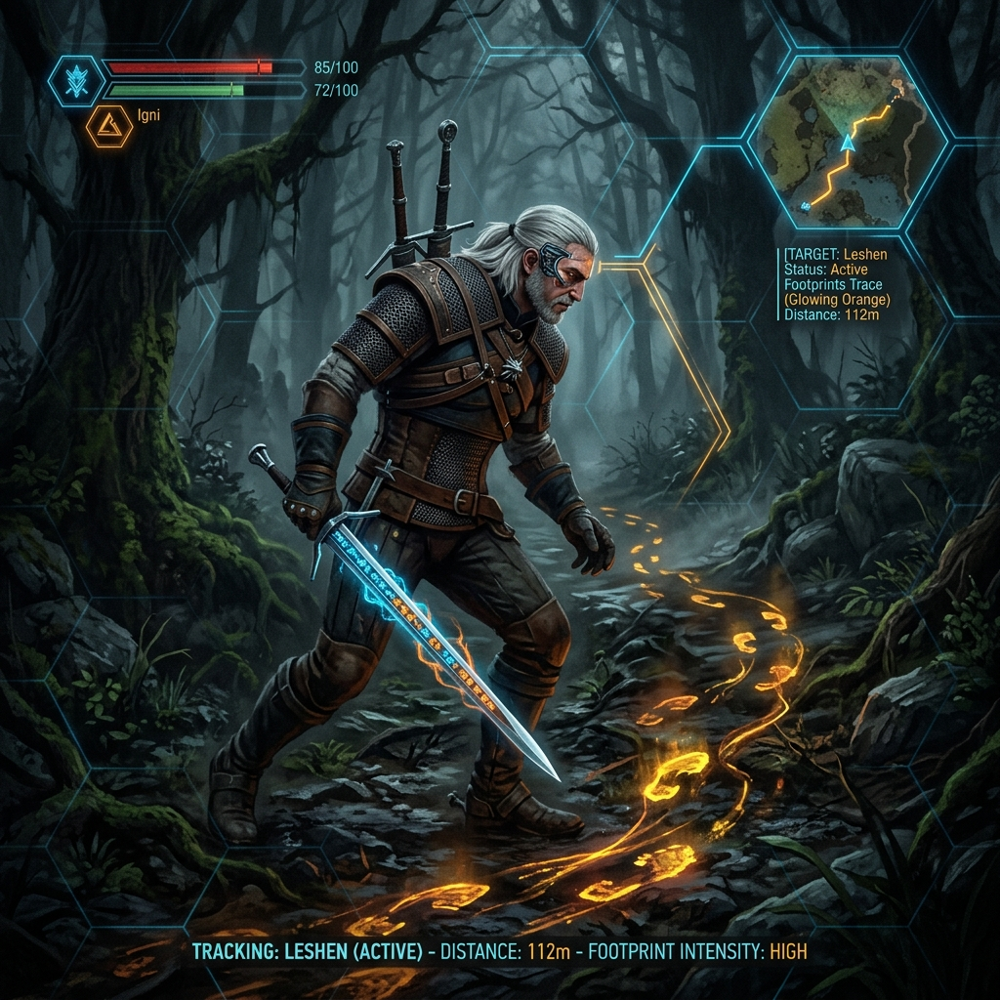
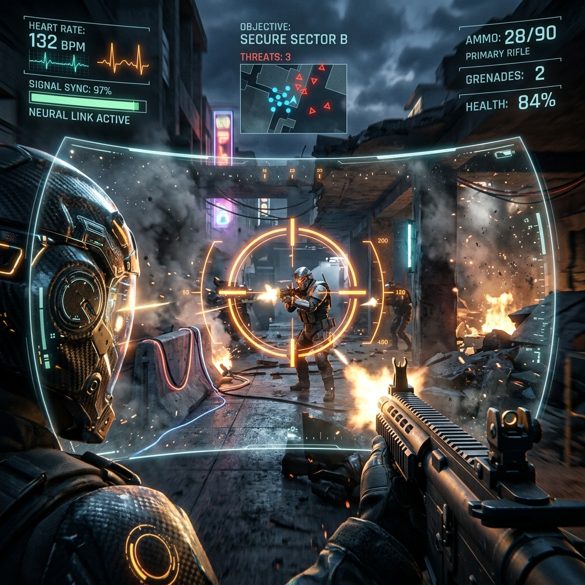
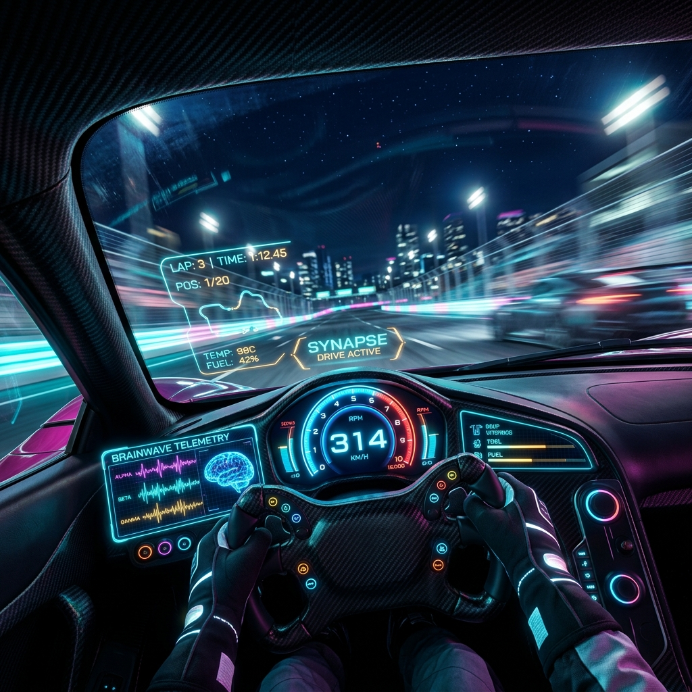

LINE-UP DE LANÇAMENTO
Selecione o seu destino neural e inicie a imersão completa

Elden Ring: FullDive Edition
Explore as Terras Intermédias e enfrente semideuses em combates brutais. Cada golpe de espada, defesa com escudo e feitiço lançado é controlado diretamente pela sua intenção motora.
Sinta o peso real do metal das armas nas suas mãos virtuais e a resistência do vento ao golpear. O sistema traduz o impacto dos chefes para o seu senso de equilíbrio, exigindo foco mental absoluto.

The Witcher 3: Wild Hunt (Neural Cut)
Siga os passos de Geralt de Rívia em um mundo aberto massivo e vivo. Converse com personagens, tome decisões morais complexas e cace feras mitológicas.
O NerveGear estimula seu córtex olfativo e visual, permitindo que você sinta o cheiro de monstros na floresta ou rastreie pegadas através do "Sentido de Bruxo" projetado na sua retina.

Counter-Strike 2 (CS2: Link-Up)
Terroristas contra Contra-Terroristas em mapas clássicos. Sem controles, mouse ou telas — apenas a sua coordenação olho-mão e reflexos puros.
Mira por Intenção Direta. Sua mente comanda o disparo. O recuo (recoil) é recriado através de pequenos impulsos táteis simulados no cérebro, exigindo memória muscular neural.

Gran Turismo 7: Neuro-Drive
Pilote os carros mais icônicos do mundo em pistas reais recriadas milimetricamente.
Ao fazer curvas a 300 km/h, o NerveGear estimula seu córtex vestibular, fazendo você sentir a força G de aceleração e frenagem no corpo, sabendo exatamente a aderência dos pneus.
FICHA TÉCNICA ARGUS CORP
Mapeamento estrutural de hardware e conexões bio-digitais
Interface Neural Direct-Link
Conexão direta BCI (Brain-Computer Interface) com 1.2M canais de transmissão. Emite micro-ondas eletromagnéticas de baixa frequência e alta precisão diretamente nas áreas cerebrais correspondentes para simular e substituir os 5 sentidos em tempo real com fidelidade de 99.8%.
Bloqueio Motor Sináptico
Segurança corporal ativa. O sistema intercepta automaticamente todos os comandos de movimentação e reação motora enviados do córtex motor para a medula espinhal, garantindo que seu corpo físico permaneça completamente imóvel, seguro e relaxado em sua cama durante as jogadas.
Chassi de Componentes
V.1.0.4a| Processador | Argus Neuro-Core 128-bit |
| Leitura Sináptica | 256 sensores sinápticos |
| Transmissão | M-Wavelength (Micro-ondas) |
| Conectividade | Fibra Óptica Q. + Wi-Fi 6E N. |
| Bateria Backup | Lítio-Polímero de emergência |
⚠️ Nota de Segurança da Argus (Protocolo de Resfriamento)
O NerveGear possui um sistema de resfriamento interno automatizado por micro-fluxo de ar sináptico. Não obstrua as saídas de ar localizadas nas extremidades traseiras do chassi para prevenir sobrecarga térmica dos chips analógicos e oscilações na integridade do sinal de imersão.
PROTOCOLO DE INICIALIZAÇÃO
Siga rigorosamente as diretrizes operacionais para ativação
Prepare o Ambiente
Deite-se de forma extremamente confortável em uma cama ou poltrona estável. Remova objetos próximos que possam restringir ou tocar o seu corpo físico.
Ajuste o Capacete
Posicione o NerveGear de forma centralizada. Garanta que as alças de aperto laterais e os sensores temporais estejam em contato firme e suave com a sua cabeça.
Conecte à Rede
Conecte o cabo de fibra óptica quântica na porta lateral ou estabeleça sincronia com o sinal sem fio Wi-Fi 6E Neural criptografado de alta estabilidade.
O Comando
Relaxe o corpo físico, feche os olhos, concentre sua mente e diga o comando de inicialização:
PERGUNTAS FREQUENTES
Respostas técnicas sobre a tecnologia FullDive